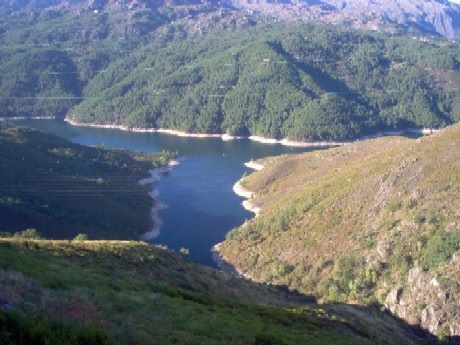
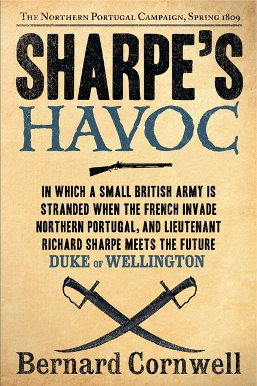
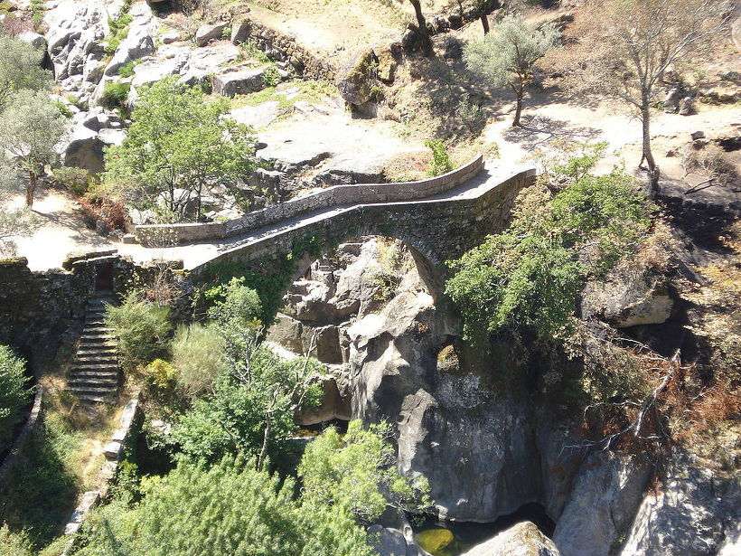
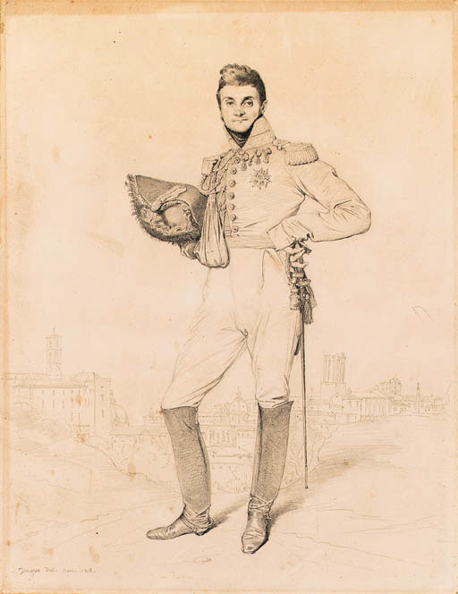
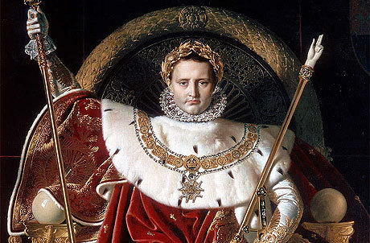
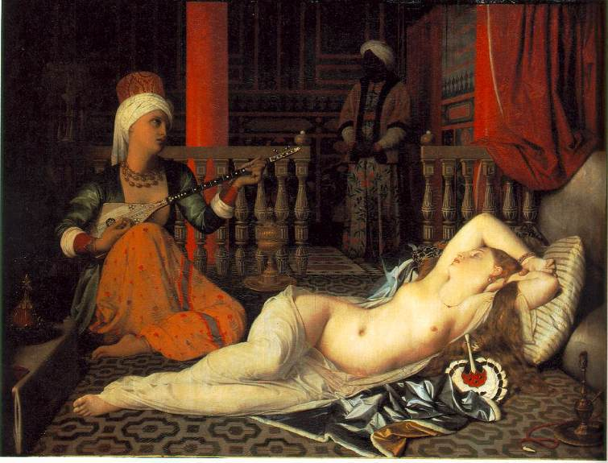
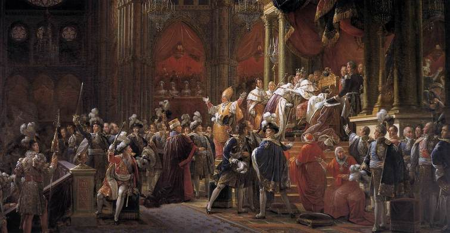

어느 용자의 초상 - 프랑스군의 포르투갈 탈출
게시: 2018-02-10T23:28:09+09:00
1809년 5월 12일 포르투 전투에서 승리한 영국군이 뒤를 바싹 뒤쫓고 있었기 때문에, 프랑스군은 허겁지겁 산길로 후퇴해야 했고, 따라서 모든 짐은 물론 대포까지 다 버리고 가야 했습니다. 분노한 포르투갈 민간인들에게 학살당할 것이 뻔한데도 부상병들을 버리고 감은 물론, 군자금까지 병사들에게 마구 나누어줄 상황이었습니다. 때는 이른 5월이라 차가운 비까지 계속 내려 후퇴하는 프랑스 병사들의 사기까지 축 적셔 놓았습니다.
그런데, 이렇게 갈 길 바쁜 프랑스군의 앞길을 가로막는 장애물이 나타났습니다. 폰트 노바(Ponte Nova, 새 다리, 스페인어로는 Puento Nuevo)라는 이름의 다리에 도착했을 때, 술트 원수의 눈 앞에 펼쳐진 광경은 두개의 긴 대들보만 남기고 그 위를 가로지른 널판지는 다 해체된 상태의 다리였습니다. 이 다리는 프랑스군이 스페인으로 퇴각하기 위해 꼭 필요한 다리였습니다. 그리고 그 건너편에는 백여명의 포르투갈 민병대(ordenanza)가 기세를 올리며 프랑스군에게 야유를 보내고 있었지요. 원래 영국군은 포르투갈 민병대에게 연락하여, 이 폰트 노바 다리를 완전히 끊어 버릴 것을 요청했지만, 중세 시대 때 지어진 이 유서깊은 다리가 완전 파괴되면 당장 그 일대의 포르투갈 민간인들이 생활이 당장 크게 곤란해졌으므로, 민병대는 영국군의 요청보다는 자신들의 생활을 위해 이 다리의 상면과 난간만을 뜯어낸 것이었습니다. 다리를 완전 파괴하여, 그 덕택에 영국군이 프랑스군을 전멸시키거나 항복을 받아내더라도, 영국군이 이 다리를 재건해줄 것 같지는 않았거든요. 어쨌거나, 이 폭 90cm 정도의 좁은 대들보 2개만 나란히 놓인 이 다리는, 포르투갈 민병대 백여명이면 충분히 지킬 수 있는 장애물이었습니다. 더군다나 계속 비가 내려 대들보는 무척 미끄러운 상태였습니다. 포르투갈 민병대는 이 정도면 다리를 충분히 지킬 수 있다고 자신하고 있었습니다. 프랑스군이 폰트 노바 앞에 도착한 것이 5월 15일 낮이었는데, 이미 영국군의 척후 기병대가 프랑스군 후미에 나타나는 상황이었으므로, 이틀도 아니고 하루만 더 여기에 발이 묶이면 프랑스군은 항복하거나 옥쇄하거나, 둘 중 하나를 택하는 수 밖에 없었습니다.

(오늘날의 폰트 노바입니다. 지금은 살라몬데 Salamonde 댐 건설로 수몰되어, 저 수면 30m 아래에 위치해 있답니다.)
이 절대절명의 순간에, 술트 원수는 제2 군단 전체에서 가장 용감하다고 소문난 사나이를 소환했습니다. 바로 루이-에티엔 뒬롱 (Louis-Etienne Dulong) 소령이었습니다. 뒬롱 소령은 영국 작가 버나드 콘월의 나폴레옹 시대 전쟁 소설인 샤프 시리즈 중 Sharpe's Havoc 편에 등장하는 사람입니다.

Sharpe’s Havoc by Bernard Cornwell (배경: 1809년 포르투갈) -------------------
(샤프 중위의 영국군 라이플병들이 점거하고 있는 고지 위의 감시탑을 뒬롱 소령이 이끄는 프랑스군이 야밤에 급습합니다. 샤프 중위의 지휘 하에 영국군이 반격에 나섭니다.)
프랑스군은 폐허가 된 감시탑 앞의 석조 테라스 쪽으로 퇴각하고 있었다. 한 장교가 그들에게 화가 난 듯 고함을 지르더니, 그 장교가 검을 뽑아들고 앞으로 나왔다. 영국군 측에서는 샤프가 앞으로 나서며 그와 검을 맞부딪히며 힘을 겨루었는데, 그는 이번에도 박치기로 상대를 공격했다. 번개불 속에 드러난 상대 장교의 얼굴을 보니 박치기 공격에 깜짝 놀라는 표정이 드러나 있었다. 하지만 프랑스 장교도 샤프와 같은 부류 출신임이 분명해 보였다. (샤프는 런던 극빈층 고아원 출신입니다 : 역주) 그 장교도 두 손가락으로 샤프의 눈을 찌르며 샤프의 사타구니를 향해 발길질을 날렸던 것이다. 샤프는 옆으로 몸을 빙그르르 돌리며 손에 쥔 검의 손잡이 부분으로 상대방의 턱을 강타했다. 프랑스 병사 2명이 쓰러진 장교를 질질 끌고 사라졌다.
--------------------------------------------------------------------------------------------
위 소설 속에서 샤프와 개싸움을 벌이다 얻어 터지는 장교가 뒬롱(Dulong) 소령입니다. 소설 속에서는 앙리 뒬롱(Henri Dulong) 소령으로 나오고, 제31 경보병 연대 소속으로 나오지만, 실제 이름은 루이-에티엔 뒬롱 (Louis-Etienne Dulong)이었고 이때 당시는 제32 경보병 연대 소속이었습니다. 또, 위 소설 속에서는 뒬롱 소령이 마치 주인공 샤프처럼 깡패 출신이었다가 입신양명하여 군 장교직에 오른 것과 비슷한 경력을 지닌 것처럼 묘사되어 있습니다만, 실제로는 외과의사의 아들로서, 나름 유복한 환경에서 자랐다고 할 수 있었습니다. 게다가, 뒬롱 소령은 저렇게 영국군 중위에게 얻어터지고 질질 끌려나간 적은 없습니다. 작가인 버나드 콘웰도, 뒬롱 소령과 같은 장교가 자기 소설 속에서 저런 굴욕을 당하도록 만들어서 무척 미안했다고 후기에 적어놓았습니다.
하지만 소설 속에서의 뒬롱 소령과, 실존 인물과 정확하게 일치하는 부분이 있습니다. 바로 용기입니다. 위의 Sharpe's Havoc에서 계속 이어집니다.
---------------------------------------------------------------------------------------------
(뒬롱 소령이 이끄는 프랑스군은, 이제 곡사포 포격의 엄호 하에, 고지 위의 영국군 라이플병들을 향해 대낮에 돌격을 감행합니다. 그러나 라이플의 긴 사정거리와 정확성 때문에 고전합니다.)
뒬롱 소령은 이제 라이플병들을 볼 수 있었다. 간헐적으로 곡사포탄이 프랑스 보병들의 머리 위를 큰 포물선을 그리며 날아가 고지 위에서 폭발하며 위협하는데도, 라이플병들이 그걸 무시하고 이젠 숨어있던 바위 틈에서 일어나 서서 소총을 재장전하고 있었기 때문이었다. 뒬롱 소령은 그의 병사들에게 소리를 질러 저 녹색 군복을 입은 적군에게 사격하라고 명령했지만, 머스켓 소총의 총성은 미약했고 머스켓 총알은 크게 빗나가기 일쑤였다. 그에 비해 라이플 총탄은 아주 정확하게 프랑스 병사들을 노렸으므로, 병사들은 고지로 향하는 좁은 길목 위로 계속 올라가기를 꺼려했다.
뒬롱은 본보기를 보이는 것이 무엇보다 중요하다는 것을 잘 알고 있었고, 운만 좋다면 라이플 사격에 쓰러지지 않고 고지 위 방벽에 닿을 수 있다고 생각했으므로, 솔선수범의 예를 보여주기로 했다. 그는 병사들에게 자기를 따르라고 소리를 지르고, 검을 뽑아들고 돌격했다. "프랑스 만세 !" 그는 외쳤다. "황제 폐하 만세 !"
"사격 중지 !" 샤프가 외쳤다.
뒬롱을 따르는 프랑스 병사는 단 한명도 없었다. 그는 혼자 돌격해오고 있었고, 샤프는 그 프랑스인의 용기를 높이 사서, 그에 경의를 표하고자 앞으로 걸어나와 예식에서 하듯 그의 검을 들어 경례를 했다. 뒬롱은 그 경례를 보고는 멈춰서서 뒤를 돌아보고, 그가 완전히 혼자라는 사실을 깨달았다. 그는 다시 샤프를 향해 돌아보고, 그도 검을 들어 경례를 한 뒤, 난폭한 동작으로 검을 다시 검집에 찔러넣으며 황제 폐하를 위해 죽기를 겁내는 그의 부하들에 대한 경멸을 드러냈다. 그는 샤프에게 고개를 끄덕여 보이고는 걸어 내려갔다.
---------------------------------------------------------------------------------------------
소설 속의 이 불필요하고 어색한 장면은, 아마도 작가 버나드 콘월이 뒬롱 소령에 대한 예우 차원에서 억지로 밀어넣은 장면 같습니다. 샤프처럼 무자비하고 인정머리없는 친구가 단순히 혼자 돌격하는 프랑스 장교를 보고 사격 중지를 외칠 것 같지는 않거든요. 그러나 실제 뒬롱 소령이었다면, 소설 속의 이런 행동을 실제로 했을 것이라는 생각이 들기는 합니다. 역사 속 실존 인물인 뒬롱 소령이 그 용기를 드높인 사건을 보면, 그는 충분히 그러고도 남을 사람이라는 생각이 정말 들거든요.
술트는 뒬롱 소령에게 100명의 선발된 척탄병을 맡기며, 밤까지 기다렸다가 다리를 탈취해달라고 부탁했습니다. 뒬롱 소령은 그 중 단 12명의 척탄병을 이끌고 선두에 서서 야음을 틈타 완전한 침묵 속에 공격을 시작했습니다. 마침 비바람이 부는 때라서, 12명의 척탄병들 중 1명이 다리를 건너다 미끄러져 저 아래 급류 속에 빠질 때의 비명 소리나 다리 입구에 서있던 보초병을 뒬롱 소령 자신이 검으로 해치울 때의 소리가 묻혀버렸습니다. 이렇게 다리를 건넌 뒬롱 소령 일행은 비바람을 피해 움막에 들어가 있던 포르투갈 민병대를 급습했고, 프랑스군 수백명이 넘어온 것으로 착각한 민병대는 별 저항을 못하고 흩어져 도주해버렸습니다.
뒬롱 소령의 이 위업이 술트의 제2군단 전체를 구출한 것입니다. (어떻게 보면 포르투갈 민병대의 경계 태만이 더 주요한 원인 같습니다만...) 당장 그날밤 중으로 다리를 수리한 뒤 전체 프랑스군이 다리를 건넜고, 술트는 자신이 달고 있던 레종 도뇌르 훈장을 떼어내 현장에서 뒬롱 가슴에 달아주었습니다.
그러나 바로 다음날, 이번에는 폰트 다 미사헬라(Ponte da Mizarela)에서 또 다시 같은 상황을 맞이했습니다. 이 폰트 다 미사헬라라는 다리는 폰트 노바와는 달리 로마 시대에 지어진, 석조 다리로서, 이번에는 대낮이었고, 또 밤까지 기다릴 시간이 없었습니다. 이 다음부터는 소설 속의 장면을 보시지요.

(구글에서 Ponte da Mizarela를 찾아보니, 이렇게 나옵니다. 19세기 초에 다시 지어진 다리라고 하니까, 이 사건 이후에 다시 지어진 모야입니다.)
----------------------------------------------------------------------------------------------
보병 2개 대대가 다리를 공략하겠지만, 다리 건너편 끝에 설치된 가시 장애물을 제거하지 않는다면 공격하는 병사들은 산산조각 날 것이 뻔해 보였다. 1.2m 높이에 두께도 그 정도 되는 이 장애물은 20여개의 가시 덤불을 서로 묶고 통나무로 눌러놓아 만든 것으로서, 돌파하기 아주 곤란한 물건이었다. 따라서 결사대(Forlorn Hope)가 제안되었다. 결사대라는 것은 동료들의 돌파구를 만들어주기 위해 죽을 각오가 된 병사들의 무리로서, 보통 이런 자살 공격대는 방어가 철저한 적의 요새 벽에 뚫린 구멍에 투입되곤 했지만, 오늘의 공격조는 반쯤 해체된 다리의 좁은 통로를 건너야 했고, 쏟아질 머스켓 사격에 목숨을 잃을 것이 뻔했다. 그들은 죽어가면서도 이 가시덤불 장애물을 치워야 했다.
제31 경보병 연대의 뒬롱 소령은, 반짝거리는 레종 도뇌르 훈장을 단 채로, 이 결사대의 지휘관으로 자원했다. 이번에는 어둠을 틈탈 수도 없었고, 또 적의 수도 훨씬 많았지만, 장갑을 끼고 가시 장애물을 치우는 혼전 속에서 검을 놓치지 않기 위해 검 손잡이에 달린 가죽끈을 손목에 졸라매는 그의 굳은 얼굴에서 걱정 같은 것은 엿보이지 않았다. 프랑스군의 전위대를 지휘하는 루아송(Loison) 장군은 전 병사들이 강둑에 늘어서서 머스켓이든 기병총이든, 심지어 권총이라도, 포르투갈 민병대(ordenanza)에게 위협 사격을 가하도록 명령했다. 이 사격으로 귀청이 떨어질 것 같은 소음이 극에 달했을 때, 뒬롱은 검을 높이 들었다가 앞으로 내지르며 돌격 명령을 내렸다.
뒬롱 자신이 속한 연대의 유격 중대가 다리 위를 내달렸다. 남아있는 돌다리의 좁은 틈 사이로는 겨우 3명이 나란히 통과할 수 있었고, 뒬롱은 그중 가장 첫번째 줄에 있었다. 포르투갈 민병대는 크게 야유를 보내고는 흙으로 쌓은 엄폐물 뒤에서 일제 사격을 퍼부었다. 뒬롱은 가슴에 총을 맞았고, 그는 총알이 어제 밤의 공로로 새로 받은 훈장을 때리고 갈비뼈를 부러뜨리는 소리를 들었다. 그는 총알이 폐까지 뚫고 들어왔다는 것을 느꼈지만, 그에게는 고통이 느껴지지 않았다. 그는 고함을 지르려 했으나, 숨이 가빠 소리를 지를 수 없었고, 대신 장갑을 낀 손으로 가시덤불을 끌어내기 시작했다. 더 많은 병사들이 도착하여 좁은 다리 위에 빽빽히 늘어섰다. 한명은 발이 미끄러져 흰 거품이 일어나는 미사렐라(Misarella) 강의 급류 속으로 떨어져 버렸다. 총알이 결사대 병사들의 여기저기를 강타했고, 대기는 화약 연기와 뭔가 부러지는 소리와 총탄이 핑핑 날아다니는 소리로 가득 찼다. 하지만 뒬롱 소령은 마침내 장애물 한 부분을 강 속으로 밀어내는데 성공했고, 병사 한명이 통과할 만한 틈을 만들어냈다. 이 틈은 함정에 빠진 프랑스 2군단 전체를 구하기에 충분할 만큼 큰 것이었다.
그는 비틀거리며 그 틈 사이로 들어가 검을 높이 들고, 숨을 쉬려 애쓰며 입으로 피거품을 내뿜었다. 지원 대대들이 총검을 꽂은 채 다리로 달려들면서, 그의 뒤에서 엄청나게 큰 함성소리가 들려왔다. 뒬롱의 결사대 중 살아남은 병사들이 가시덤불의 나머지 부분들을 치워내면서, 이미 전사한 유격병(voltigeur) 10여명의 시체를 무자비하게 다리 밑 강물 속으로 발로 차 던져 버렸다. 그들은 함성과 함께 돌격했고, 뒬롱 소령의 결사대를 저지하기 위해 총을 쏜 뒤 아직 재장전 중이던 포르투갈 민병대원들은 프랑스군이 떼거리로 몰려오는 것을 보고는 도주해버렸다. 수백 명의 민병대원은 프랑스 총검을 피하기 위해 서쪽 언덕을 기어 올랐다.
뒬롱은 포르투갈 민병대가 버리고 간 가장 가까운 엄폐물 근처에 멈춰섰고, 거기서 그는 검이 손목에 연결된 가죽끈에 매달려 대롱거리는 채로 허리를 굽혔고, 피와 침이 섞여 그의 턱으로 길게 흘러내렸다. 그는 눈을 감았고, 기도를 하려고 애를 썼다.
"들 것을 가져와 !" 한 하사관이 외쳤다. "들 것을 만들어. 의사를 찾아 !" 프랑스군 2개 대대가 포르투갈 민병대를 다리에서 쫓아냈다. 아직 포르투갈인 몇몇이 왼쪽의 높은 바위 언덕에서 얼쩡대고 있었지만, 머스켓 소총을 쏘기에는 너무 먼 거리였기 때문에, 프랑스군은 그들이 그냥 자신들이 탈출하는 과정을 지켜보도록 내버려 두었다.
뒬롱 소령이 함정의 마지막 틀을 억지로 열어젖힌 것이었고, 이제 북쪽으로 향하는 도로는 활짝 열려 있었다.
-----------------------------------------------------------------------------------------------
저는 이 장면을 읽고 대체 뒬롱 소령은 죽은 것인가 산 것인가 상당히 궁금했습니다. 중상을 입은 것은 사실인 모양인데, 당시 프랑스군은 금은보화도 다 버리고 가는 마당에 설령 살 수 있다고 해도 저런 중상자를 데리고 갈 만한 상황이 아니었던 것이 더 마음에 걸렸습니다. 예, 좀더 솔직히 이야기하자면 마음이 아팠습니다. 작가인 버나드 콘월은 작품 맨 끝 부분에 historical note를 적는 것으로 유명한데, 거기서 작가 자신도 이 사건 이후 뒬롱 소령의 생사 여부를 찾아내지 못했다고 아쉬워하고 있습니다.
(작가 버나드 콘월입니다.)
그런데, 이 뒬롱 소령의 생사 여부를 구글을 통해 쉽게 찾을 수 있었습니다. 아마도 Sharpe's Havoc이 씌여지던 2002~2003년 당시엔 구글이 그다지 활성화되지 않았었나 보지요 ? 다음 사이트, 즉 유명한 크리스티 경매에서 이 뒬롱 소령의 초상화가 1997년 5월 22일에 무려 $1,652,500, 우리 가격으로는 대략 18억원에 팔렸다는 상세 기록이 나와 있더군요. 1997년 가격으로 18억원이면, 지금 가격으로는 한 30억 되겠네요.
http://www.christies.com/LotFinder/lot_details.aspx?intObjectID=226156

(저 도전적인 표정 속에 뭔가 슬픔이 느껴지지 않으십니까 ?)
이 별로 손이 많이 간 것 같지 않은 단색 초상화가 무려 18억원에 팔린 것은, 이 그림을 그린 사람이 대가인 앵그르 (Jean-Auguste-Dominique-Ingres)이기 때문입니다. 이 그림의 제목은 General Louis-Etienne Dulong de Rosnay의 초상입니다. 즉, 뒬롱 소령은 푸엔테 마세렐라에서 죽지 않았고, 나중에 장군까지 승진한 것입니다. 이 크리스티 경매 기록에는 앵그르가 1818년 이 그림을 그리게 된 배경 (1815년 나폴레옹 몰락 이후, 일감이 떨어져 돈이 궁했기 때문...)은 물론이고, 모델이었던 뒬롱 장군에 대해서도 상세히 씌여 있습니다. 그가 폰트 노바에서 영웅적인 활약으로 술트의 포르투갈 원정군을 구했다는 이야기도 소개되어 있습니다. 이 그림은 1818년에 그려진 것으로, 흐릿한 로마시를 배경으로 하고 있습니다.

(앵그르는 이런 나폴레옹 찬양화를 많이 그렸기 때문에, 나폴레옹 몰락 직후에는 금전 사정이 급격히 안좋아졌습니다. 그래서 그 시절에는 주로 이런저런 중산층들의 초상화를 그려서 먹고 살았고, 뒬롱 장군의 초상도 그런 이유로 그리게 되었습니다.)

(1840년 앵그르가 사정이 좋아진 뒤에 그린 '오달리스크' 입니다.)
원래 뒬롱 드 로즈네는 1780년 프랑스 동부 시골인 로즈네에서 의사의 아들로 태어났습니다. 나폴레옹보다 11살 정도 어린 셈이지요. 그는 1798년 18살의 나이로 처음에는 외무성에 잠깐 몸을 담았다가, 1년 만인 1799년에 장교로 군에 입대합니다. 역시 당시에는 출세의 야망이 있는 건강한 젊은이에게는 군대가 최고의 직장이었던 것이지요. 그는 수완이 좋았는지 1년만에 중위를 거쳐 대위까지 승진합니다. 그러나 소령 진급에는 다소 시간이 걸려, 1807년에야 승진을 합니다. 그리고 2년 후인 1809년, 즉 위 소설 속 배경이 되는 포르투(Porto) 작전 직후에는 대령으로 진급을 했더군요. 그러니까 술트가 자신과 제2군단을 구해낸 영웅을 잊지는 않았던 모양입니다.
1800년부터 1807년 사이에는 여러가지 크고 작은 전쟁이 많았는데, 그 사이에 뒬롱의 활약은 별로 없었을까요 ? 당연히 있었습니다. 그는 아우스테를리츠 전투에도 참전했었고, 이때 큰 부상을 입어 평생 오른팔을 쓰지 못하는 불구가 되어 버렸습니다 !! 저 초상화를 자세히 보시면, 오른팔이 슬링에 걸려 있는 것을 보실 수 있을 것입니다. 즉, 1809년 포르투갈에서 술트의 제2 군단을 구하기 위해 다리를 넘어 돌격할 때, 그는 이미 한 쪽 팔은 못쓰는 불구의 몸이었고, 검은 왼손으로 쥐고 있었던 것입니다. 그럼에도 불구하고 술트가 그에게 결사대의 지휘를, 그것도 2번이나 맡긴 것을 보면, 그가 얼마나 용감한 사나이였는지 짐작이 가실 것입니다. 1810년에 이루어진 그의 건강진단서를 보면, 그의 몸에는 13군데의 큰 상처가 있었고, 모두 평생 큰 고통을 주는 상처였다고 합니다. 그 중 하나는 폰트 다 미사헬라에서 입은 것이겠네요.
뒬롱 소령이 폰트 다 미사헬라에서 입은 상처가 어디에 어느 정도였는지는 확실한 기록이 없는 것 같습니다. 그러나 한 웹사이트에 따르면 그는 이때 머리(!)에 총상을 입었다고 합니다. 또, 이때 쓰러진 그를 어떻게든 데리고 가기 위해 (다른 부상병들은 버리고 가더라도 낭만적인 프랑스인들이 아니더라도 이런 영웅을 그렇게 버리고 갈 리는 없지요) 사단장이 들 것을 만들어, 각 연대에서 가장 신체 조건이 좋은 척탄병들이 번갈아가며 그의 들 것을 운반하도록 지시했다고 합니다. 그러나 그가 속했던 연대의 척탄병들이 우리의 영웅을 다른 연대에게 맡길 수 없다며 단호히 거부하고, 자기들끼리 떠매고 갔다고 합니다. (여기에는 또 그의 소속 연대가 32연대가 아니라 15연대라고 되어 있네요...)
1813년에, 그는 자작으로 봉해지면서 장군이 되었는데, 그때 그는 나폴레옹의 신참 근위대(Jeune Garde)에서 복무해줄 것을 요청받았다고 합니다. 나폴레옹은 자신이 일으킨 전쟁으로 인해 부상을 입고 불구가 된 사람들을 보는 것이 마음이 편치 않았는지, 자신의 주변에 영구적인 부상을 입은 병사나 장군이 있는 것을 싫어했다고 합니다. 그런데도 이렇게 한쪽 팔을 쓸 수 없는 사람을 신참 근위대 지휘관으로 삼은 것은, 이 고참 장교의 용기에 대한 대단한 칭송으로 받아들여졌습니다.
어쨌거나 뒬롱 장군은 1815년 나폴레옹의 100일 천하 때, 나폴레옹을 따르지 않고 부르봉 왕가를 섬기는 것을 택했습니다. 부르봉 왕가는 이미 혼이 단단히 난 상태였기 때문에, 군 장교들의 인심을 얻기 위해 안절부절하는 상태였던지라, 뒬롱 장군과 같은 저명한 장군의 비위를 맞추고자 뒬롱을 백작에 봉하고 루이 18세의 근위대 부지휘관 자리에 앉혔습니다. 그는 나중에 샤를 10세의 즉위식에도 참여했고, 생 루이(Saint Louis) 훈장도 받고, 왕실 인사(gentilhomme de la Chambre du Roi)로도 인정받을 정도로 출세를 거듭했습니다.

(샤를 10세의 즉위식 광경입니다. 뒬롱 장군을 찾아 BoA요. 저는 포기.)
그러나 역시 용감한 군인의 최후는 그다지 행복하지는 않았습니다. 1828년, 그는 자살을 택했는데, 그 이유는 다름아닌, 평생 그를 괴롭혔던 수만은 전투 부상으로 인한 육체적 고통 때문이었다고 합니다. 불과 48세의 나이였으니, 정말 용감한 늙은 군인이라고 하기엔 너무 젊은 나이라고 할 수 있겠습니다.
Source : Sharpe’s Havoc by Bernard Cornwell
https://fr.wikipedia.org/wiki/Louis_%C3%89tienne_Dulong_de_Rosnay
https://gw.geneanet.org/dorsner?lang=fr&p=louis+etienne&n=dulong+de+rosnay
http://thenapoleonicwargamer.blogspot.kr/2010/07/general-louis-etienne-dulong-de-rosnay.html
http://histoiresdenosfamilles.fr/cahiers_ba/cahier_2_chap3.html
https://en.wikipedia.org/wiki/Ponte_da_Mizarela